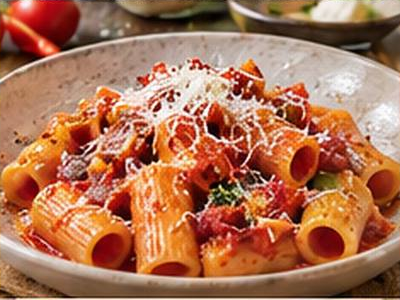

← Back to all recipes
PASTA · ROMAN
Rigatoni Amatriciana
Rigatoni coated in tomato, guanciale, Pecorino Romano, and chile.
40 minServes 4

Ingredients
- 12 oz rigatoni
- 5 oz guanciale, diced
- 1 tbsp olive oil
- ½ tsp red-pepper flakes
- 1 can (28 oz) whole peeled tomatoes, crushed
- ¾ cup Pecorino Romano
- Salt
Preparation
- Render guanciale until crisp; add red pepper.
- Add tomatoes and simmer 15–20 minutes.
- Cook rigatoni al dente, reserving pasta water.
- Toss pasta with sauce and a splash of pasta water; finish off heat with Pecorino.